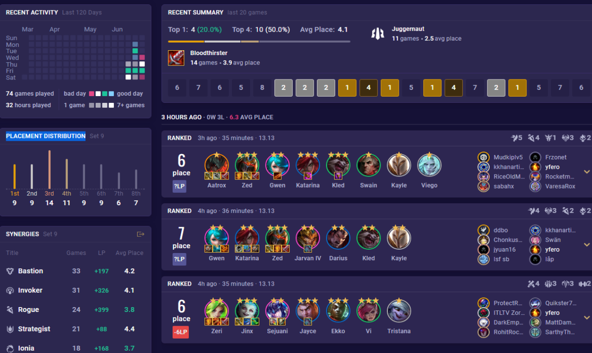

Julio Cesar Genao Rosa es un joven Dominicano nacido en San Francisco de Macoris, Republica Dominicana. Este joven amatante a los video juegos viene de una familia de artistas y escultores pero el a decidido tomar un camino diferente y dedicar su vida a los videos juegos en los cuales se a descatado bastante por su participacion en las ARAM de el servidor Latino Americano. Regando la voz de ser un jugador imparable en esta modalidad de juego, conocido por increible marena de jugar, no morir hasta el minuto 20 o mas, y siempre ganar todas sus partidas.
Luego de convertise en uno de los jugadores de ARAM mas reconocidos de la region de Latino America cambio su rumbo y se dirigio hacia la region Norte Americana donde se dedica a jugar profesionalmente al Team Fight Tactics, llegando 3 veces consecutivas a challenger a decido lanzarse como jugador profesional de Team Fight Tactics, sus sueños son algun dia conocer a su Youtuber favorito Manute y algun dia superar a Snoody.
Este joven jugador profesional de tft mejor conocido como kouky es una tryhard, un chaval que se intereso por el competitivo de TFT una modalidad de juego de la compañia de Riot Games y no a parado de tryhardear hasta con sus amigos logrando traumarlos con su play-style ya sea comprando los Darius o moviendolos.